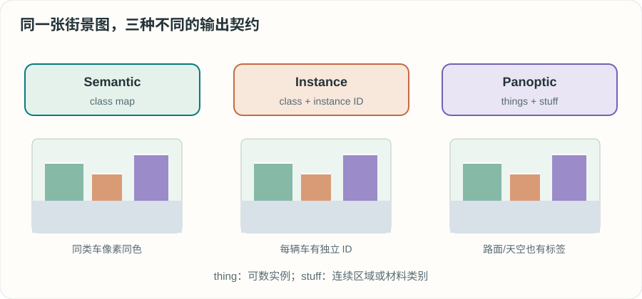
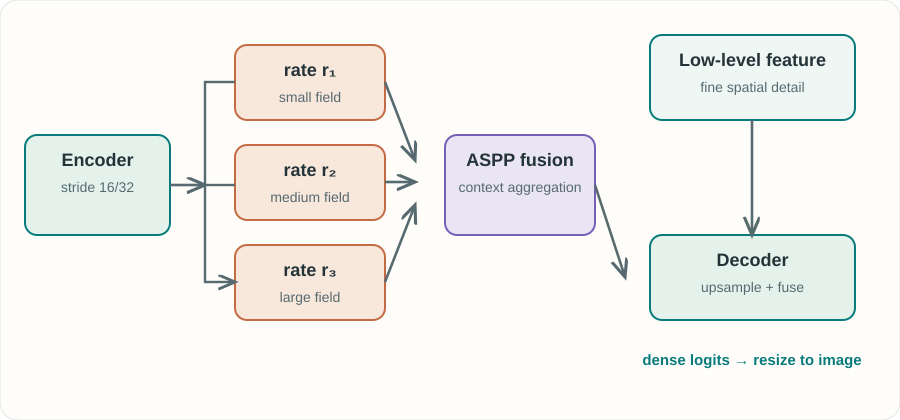
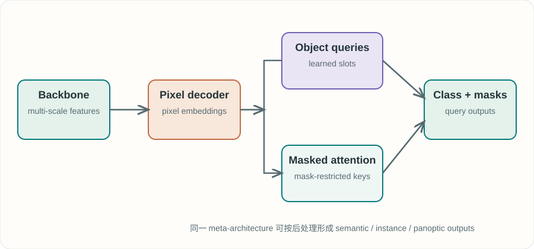
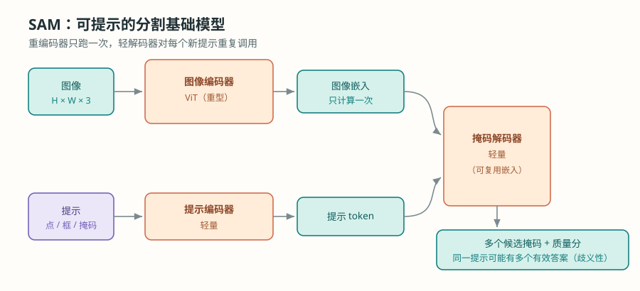

CHAPTER 22 · 语义与全景分割
从 DeepLab 到 SAM：分割模型的三条演进路线
分割不只是把图像涂成彩色：模型可能要识别每个像素的类别、区分同类实例，或根据一个点和一个框交互式地产生掩码。本章把 DeepLab 的多尺度密集预测、Mask2Former 的 query-based 通用分割与 SAM 的 promptable segmentation 放在同一张技术地图中。
先定义输出：semantic、instance 与 panoptic
语义分割给每个像素一个类别标签；同一类别的不同对象可以共享标签。实例分割对每个可数对象输出独立 mask 和实例身份，例如两辆车分别拥有 instance ID 17 与 23。全景分割将两者统一：可数的 thing 类别按实例分开，不可数的 stuff 类别（道路、天空、草地）按语义区域覆盖整幅图像。
这三个任务的差异是输出契约，不只是网络结构。若下游需要计算每辆车的轨迹，只有语义类别图不够；若需要测量道路覆盖面积，只有实例掩码也不够。先定义像素标签是否需要实例 ID，再决定模型和评估指标。

空洞卷积：扩大感受野但保留输出网格
分类网络常通过 stride 与 pooling 降低特征图分辨率；密集预测却需要尽可能保留空间位置。空洞卷积（atrous / dilated convolution）在卷积核采样点之间插入间隔，使 3×3 卷积在 dilation=2 时覆盖 5×5 的有效视野，在 dilation=4 时覆盖 9×9，而可学习权重仍只有 9 个。它扩大感受野，却不必额外增加卷积核参数。
k 是核边长，r 是 dilation rate；该公式描述采样覆盖范围，不代表每个位置都计算了一个稠密 k_eff×k_eff 核。
空洞卷积不是免费扩大感受野：过大的 dilation 会让采样点稀疏，可能产生 gridding artifacts；padding 和输出 stride 也必须配套，否则空间尺寸会改变。DeepLab 系列使用不同 dilation rate 的并行或级联分支捕捉尺度变化，并在编码器中控制 output stride。
DeepLabv3+：上下文金字塔与边界解码
DeepLab 的技术路线可以按问题拆开：早期版本把 atrous convolution 用于密集预测，并尝试 DenseCRF 改善边界；DeepLabv2 强化 ASPP 多尺度上下文；DeepLabv3 加入 image-level context 并改进多尺度特征；DeepLabv3+ 则在 DeepLabv3 编码器后加入轻量 decoder，把低层高分辨率特征与上采样后的语义特征融合，进一步细化对象边界。
ASPP（Atrous Spatial Pyramid Pooling）把同一输入特征送入多个不同 dilation rate 的卷积分支，再融合结果。低层特征分辨率高但语义较弱，高层特征语义强但边界粗；decoder 用低层信息补回轮廓。原论文还把 depthwise separable convolution 用到 ASPP 与 decoder，减少计算成本。论文报告的 benchmark 数字必须连同数据集、训练协议和模型配置一起引用，不应直接当作今天任何数据集上的保证。

Panoptic Quality：质量与识别率分开看
全景分割需要同时评估实例识别是否正确、分割轮廓是否准确。Panoptic Quality（PQ）先按类别进行一对一匹配：预测 segment 与真实 segment 的 IoU 必须大于 0.5 才能成为匹配对；每个预测和真实 segment 最多参与一个匹配。未匹配预测计为 FP，未匹配真实对象计为 FN。
PQ = SQ × RQ；SQ 衡量已匹配区域的平均 IoU，RQ 衡量匹配识别质量。
把两个因素分开有助于定位问题：PQ 下降可能来自 mask 边界变差，也可能来自漏检、重复预测或类别错误。只看 mIoU 无法完整衡量实例识别；只看 AP 也无法覆盖 stuff 区域。
Mask2Former：用 queries 统一多种分割任务
Mask2Former 把分割看作一组 query 预测：backbone 提供多尺度特征，pixel decoder 生成较高分辨率的 per-pixel embeddings，Transformer decoder 维护一组 object queries。每个 query 同时预测类别分布和一个 mask；不同任务通过输出后处理解释这些 mask：语义分割聚合类别像素，实例分割保留对象实例，全景分割再统一 things 与 stuff。
其关键机制是 masked attention：上一层 query 预测的 mask 被 resize 并阈值化，限制下一层 cross-attention 只关注对应区域内的图像特征。它把注意力集中到当前 query 可能负责的空间区域，而不是让每个 query 每层都无差别地读取整幅特征图。论文称这种设计可用于 panoptic、instance 和 semantic 三类任务；这不代表所有数据集都能用同一套标签映射和后处理直接套用。

SAM / SAM 2：从类别监督走向提示式分割
Segment Anything Model（SAM）把输入从“给定一张图并输出固定类别集合”改为“给定图像与提示，输出一个合理 mask”。它有三个模块：image encoder 把图像编码成 embedding；prompt encoder 编码稀疏提示（点、框，论文也探索文本）和稠密提示（已有 mask）；mask decoder 融合两类 embedding 并输出 mask。对同一张图，image embedding 可以复用，不同提示只需运行较轻的交互分支。
一个点可能同时指向衣服和穿衣的人，提示本身具有歧义。SAM 因此可以为一个提示输出多个候选 mask，并为每个候选预测质量分数；训练时对候选 mask 采用最小损失策略。SA-1B 数据集包含约 11M 张图像和 1.1B 个自动生成的 mask，论文描述了模型辅助人工标注、半自动和全自动三个数据引擎阶段。

边界同样重要：原始 SAM 的文本到 mask 只是探索性结果；论文明确指出重型 image encoder 使整体模型并非端到端实时，且语义/全景分割的提示设计并不直接。SAM 2 把可提示分割扩展到视频，引入 streaming memory；它是后续版本，不应把视频记忆机制倒写成 2023 年 SAM 的原始架构。
可运行实验：空洞卷积几何与 PQ
下面用两个小计算验证有效感受野和 PQ 分解。示例里的 IoU 数值是人为构造的，用于核对公式；不是任何模型在 COCO 或 ADE20K 上的实测分数。
def effective_kernel(kernel_size, dilation):
return kernel_size + (kernel_size - 1) * (dilation - 1)
assert effective_kernel(3, 1) == 3
assert effective_kernel(3, 2) == 5
assert effective_kernel(3, 4) == 9
assert effective_kernel(5, 3) == 13
print("3x3 dilation=4 covers a 9x9 effective field")import torch
matched_ious = torch.tensor([0.80, 0.70])
tp, fp, fn = 2, 1, 1
sq = matched_ious.mean()
rq = tp / (tp + 0.5 * fp + 0.5 * fn)
pq = sq * rq
assert torch.allclose(sq, torch.tensor(0.75))
assert abs(rq - (2/3)) < 1e-6
assert abs(float(pq) - 0.5) < 1e-6
print("SQ, RQ, PQ:", float(sq), rq, float(pq))如何选型：监督目标决定模型，不是排行榜
- 固定类别的场景语义图：DeepLabv3+、SegFormer 等语义分割模型，优先关注 output stride、边界精度和多尺度目标。
- 同类实例需要独立 ID：Mask R-CNN 等实例分割器；小物体、密集遮挡和实时性要单独评估。
- 同时要 things 与 stuff：Panoptic FPN 或 Mask2Former 等统一框架，检查类别映射与 panoptic post-processing。
- 交互式标注或未知类别：SAM / SAM 2 可作为提示式工具或候选 mask 生成器，但领域偏移、细长结构和语义类别映射仍可能需要人工复核或专门微调。
理解检查：SAM 给出一个 mask，是否等于完成了语义分割？
不等于。单次提示返回的是被提示对象的候选区域；要得到语义分割，需要定义类别集合、为所有像素分配标签并处理类别冲突与未覆盖区域。
原始论文与技术文档
- Chen et al., DeepLab: Semantic Image Segmentation with Atrous Convolution, arXiv:1606.00915
- Chen et al., Rethinking Atrous Convolution for Semantic Image Segmentation, arXiv:1706.05587
- Chen et al., DeepLabv3+, ECCV 2018
- Kirillov et al., Panoptic Segmentation, CVPR 2019
- Cheng et al., Mask2Former, CVPR 2022
- Kirillov et al., Segment Anything, ICCV 2023
- Ravi et al., SAM 2: Segment Anything in Images and Videos, 2024